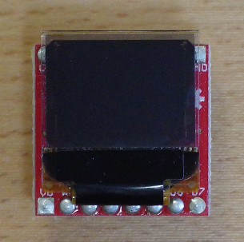
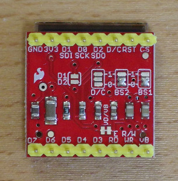
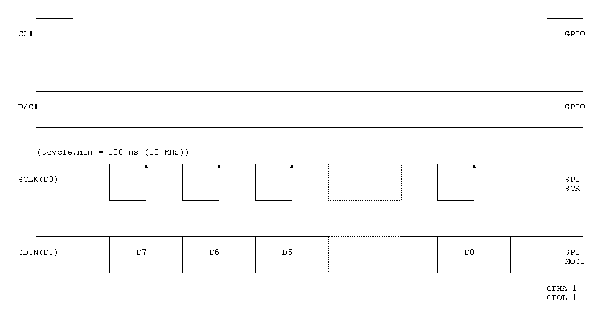

SparkFun Micro OLED Breakout
The SparkFun Micro OLED Breakout board is a 0.66 inch 64x48 pixels monochrome OLED. It has an SPI interface.It use the SSD1306 controller.


SPI interface (4-wire serial interface)

| Command | Code |
|---|---|
| Set Contrast Control | 0x81 A[7:0] |
| Entire Display ON | 0xa4/0xa5 |
| Set Normal/Inverse Display | 0xa6/0xa7 |
| Set Display ON/OFF | 0xae/0xaf |
| Continuous Horizontal Scroll Setup | 0x26/0x27 0x00 B[2:0] C[2:0] D[2:0] 0x00 0xff |
| Continuous Vertical and Horizontal Scroll Setup | 0x29/0x2a 0x00 B[2:0] C[2:0] D[2:0] E[5:0] |
| Deactivate Scroll | 0x2e |
| Activate Scroll | 0x2f |
| Set Vertical Scroll Area | 0xa3 A[5:0] B[6:0] |
| Set Lower Column Start Address for Page Addressing Mode | 0x00-0x0f |
| Set Higher Column Start Address for Page Addressing Mode | 0x10-0x1f |
| Set Memory Addressing Mode | 0x20 A[1:0] |
| Set Column Address | 0x21 A[6:0] B[6:0] |
| Set Page Address | 0x22 A[2:0] B[2:0] |
| Set Page Start Address for Page Addressing Mode | 0xb0-0xb7 |
| Set Display Start Line | 0x40-0x7f |
| Set Segment Remap | 0xa0/0xa1 |
| Set Multiplex Ratio | 0xa8 A[5:0] |
| Set COM Output Scan Direction | 0xc0/0xc8 |
| Set Display Offset | 0xd3 A[5:0] |
| Set COM Pins Hardware Configuration | 0xda A[5:4] |
| Set Display Clock Divide Ratio / Oscillator Frequency | 0xd5 A[7:0] |
| Set Precharge Period | 0xd9 A[7:0] |
| Set VCOMH Deselect Level | 0xdb A[6:4] |
| NOP | 0xe3 |